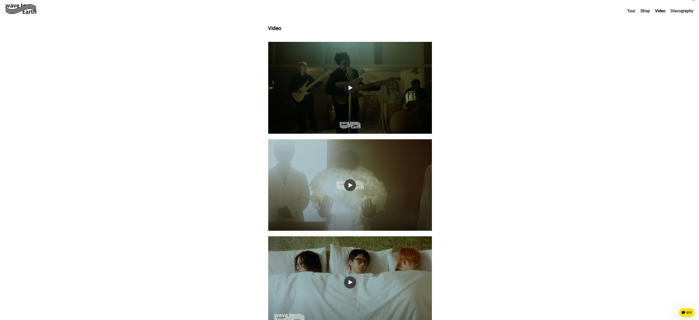

Week 9 🎝 Analysing & Extracting Data from Audio
Task 1: Extract features
🎝 Identify and download three music tracks relating to your portfolio theme from an online source
🎝 Load the track and add 3 panes. One should be a Spectrogram, one a Mel Frequency Cepstral Coefficients, and one a Chromagram - If you forget how to run these analyses, look back to this week's Group Lab for instructions.
🎝 Take a screenshot of the panes (or export the annotation layers as an image)
🎝 Save the three annotation layers as individual CSV files (i.e. the raw data)
My chosen theme for my data set is the band wave to earth from Seoul, South Korea. They are a 3-piece band consisting of guitarist and lead singer Daniel Kim, drummer Dong Kyu Shin and bassist John Cha. They also have 2 session members, keyboardist Jo Jung-guen and saxophonist Jeon-min. They manage all writing, composing, recording, mixing and mastering themselves, creating a unique indie pop/rock sound with lo-fi and jazz elements. I chose wave to earth as they are one of my favourite and most listened to artists, who I have been lucky enough to see perform live twice - Listen to them here !!
Task 2: Compute and visualize features with histograms
🎝 For each track and feature type extracted in task 1:
🎝 In Python (Jupyter notebook or otherwise), load the three CSV files with the raw features
🎝 Compute and visualize the histogram of the features for the three tracks
🎝 For either the MFCC or Chroma feature, compare the histograms for the 3 tracks and highlight/discuss if the histograms capture significant differences between the tracks and if you expected this difference based on listening to the tracks (max 300 words)
Some challenges I faced when working with music related data this week were accessing scores as many required you to buy the score or subscribe to access it.
Furthermore, my chosen theme did not have any official scores so I have had to rely on unofficial scores that may contain mistakes, I am also concerned there could be issues with copyright.
 Wave to earths official website presents their discography from their most recent album 'play with earth! 0.03' to their oldest single 'wave' by displaying the album artwork that acts as a link to the releases Spotify page. They give credit to Seungki Hong who creates all their artwork as well as being their main photographer. Once you click on an artwork and are redirected to the Spotify page you can then find more descriptive data such as the releases name, tracks included, time of pieces, when it was released and the acoustic data.
Wave to earths official website presents their discography from their most recent album 'play with earth! 0.03' to their oldest single 'wave' by displaying the album artwork that acts as a link to the releases Spotify page. They give credit to Seungki Hong who creates all their artwork as well as being their main photographer. Once you click on an artwork and are redirected to the Spotify page you can then find more descriptive data such as the releases name, tracks included, time of pieces, when it was released and the acoustic data.
Furthermore, their website contains a video section displaying their visualisers for each song from their most recent album 'play with earth! 0.03' as well as live performances from their 'play with earth Europe' tour. More music videos and live performances can be found on their YouTube channel and social media accounts, all of which are linked on their official website site.
I failed to find any official notated data however, their where many unofficial and fan made scores. One website that contained scores for their songs was MuseScore. Unfortunately this means there isn't scores available for every song and if there is, it may contain errors.